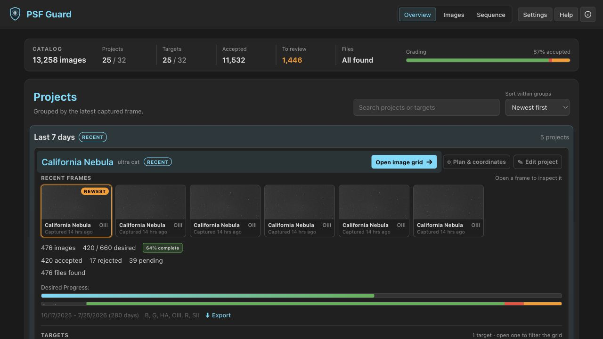
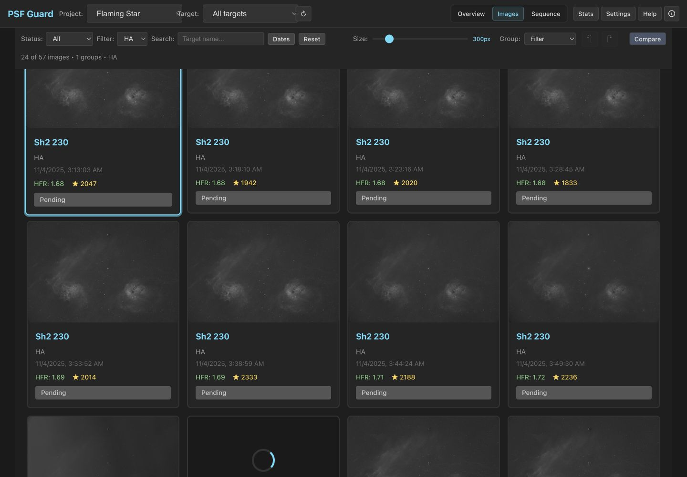
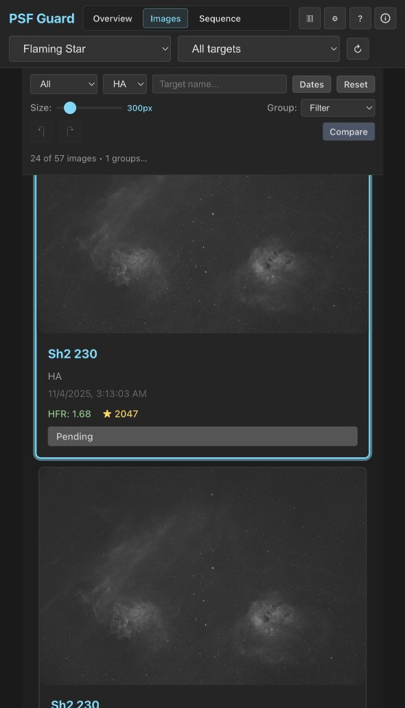
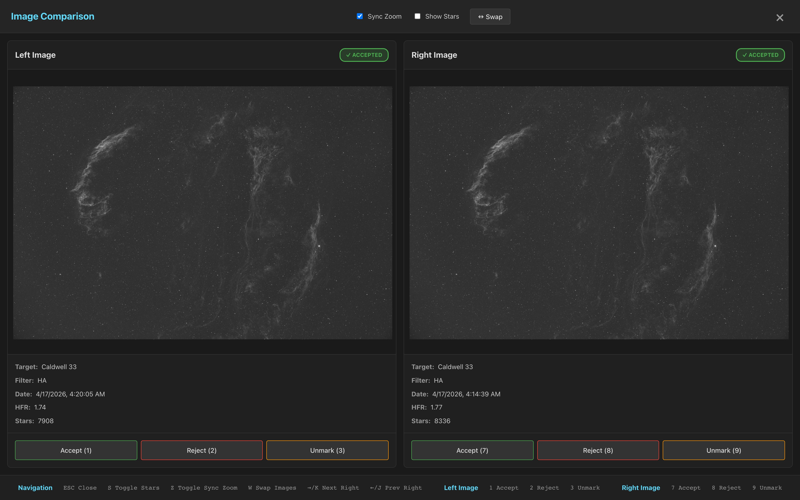

The Grader UI
A fast, keyboard-driven UI for reviewing and grading subs. It's the same
UI everywhere: the desktop app ships it built in (no server or browser
needed), and psf-guard server serves the identical interface
to any browser for NAS and remote setups. Grades stay in the active
catalog. When the active catalog is an existing Target Scheduler database,
the scheduler can use the grades to replace rejected frames.
Start from FITS folders or an existing Target Scheduler database.
Overview dashboard

The overview aggregates all your configured catalogs: project and target statistics, completion percentages, real-time file discovery status, and filter usage. Click through any project or target to land in its grid. After grading, use ⬇ Export on a project or target to build clean stacking input; see Export for Stacking.
Image grid

- Smart filtering — project, target, grading status, filter, date range, search, image size, and filter/date/session grouping.
- Batch operations — multi-select with Shift+Click / Ctrl+Click, or move the cursor with arrows and press Space. Accept, reject, or unmark the whole selection.
- Stable review position — preview generation, stack status, and database refreshes preserve the first visible image instead of moving the page.
- Metadata on every card — HFR, star counts, acquisition details.
- Smart loading — fast previews first, full resolution on zoom. Previews generate on demand in the background, so a fresh install is browsable immediately; a "Generating…" badge shows while the queue works.
Responsive narrow-window layout

Comparison mode

Put two frames side by side with synchronized (or independent) zoom and pan — ideal for judging a borderline frame against a known-good neighbor. Accept, reject, or unmark both images at once.
Sky context and plate solving
Open a frame to see catalog objects expected near its FITS or catalog
target coordinates. If it has no embedded WCS, choose
Solve field or press O to run Seiza against the
pixels. A successful solution enables the sky overlay with catalog labels,
outlines, an RA/Dec grid, solved scale, and target offset. See
Sky Context & Plate Solving for catalog setup,
Docker configuration, validation, and the API.
Sequence view

The Sequence view plots per-frame quality over a night: HFR, star counts, and — once you press Scan Quality — spatial, photometric, and pixel-derived astrometry signals. Flagged runs are classified (occlusion, clouds, sky brightening, off target, pointing jump/drift, or unsolved). The analyzer keeps stable deliberate framing segments advisory, while returned excursions and within-segment drift remain rejectable. The selectors focus the evidence, and a per-image review appears before a recommended rejection is written. See Quality Screening and Astrometry Quality.
Keyboard shortcuts
| Key | Action | Key | Action |
|---|---|---|---|
| K / → | Next image | A | Accept |
| J / ← | Previous image | X | Reject |
| ↑ / ↓ | Nearest grid row | Space | Toggle selection |
| Enter | Open image | C | Compare |
| Esc | Clear / close | U | Unmark |
| S | Stars overlay | + / − | Zoom |
| O | Solve / sky overlay | ||
| Ctrl+Z | Undo | Ctrl+Y | Redo |
Where grades go
Every action updates gradingStatus in the active catalog,
with undo and redo tracked in the UI. PSF Guard uses the Target Scheduler
database mapping for catalogs it creates. If you open or sync a live Target
Scheduler database, the scheduler can count accepted images against each
exposure plan and queue replacements for rejected frames.